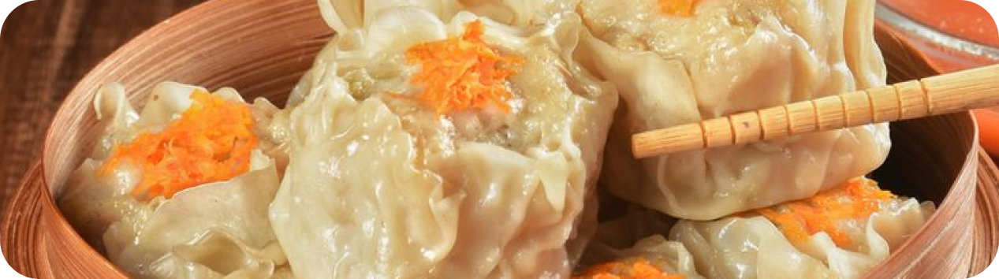

CHINESE
Shrimp Chicken Dimsum

- 200 gr paha ayam fillet
- 50 gr kulit ayam
- 50 gr udang kupas
- 2 siung bawang putih
- 1 butir putih telur
- 9 sdm tepung sagu
- 1/2 sdm garam
- 1 sdm gula
- 1/2 sdt merica
- 1/4 sdt kaldu jamur
- 3 sdm es batu
- 2 sdt saus tiram
- 2 sdt minyak wijen
- 2 sdt kecap asin
- 50 gr wortel parut
- 15-20 kulit pangsit
- 2 siung bawang putih
- 1 siung bawang merah
- 3 cabai rawit
- 1 cabai merah ukuran sedang
- 6 sdm saus sambal
- 1 sdm cuka
- 150 ml air
- 2 sdm minyak goreng
- 2 sdt gula
- 1/2 sdt kaldu jamur
- Masukkan 1/2 ayam, bawang putih, tepung sagu, putih telur, saus tiram, kecap asin, minyak wijen, merica, garam, gula, kaldu jamur, dan es batu ke dalam food processor cincang hingga halus.
- Masukkan 1/2 ayam dan udang, cincang sebentar.
- Pindahkan ke wadah, masukkan 1/2 parutan wortel, aduk rata.
- Ambil kulit dimsum, beri 1 sdm adonan lalu bungkus dan beri parutan wortel di atasnya.
- Kukus siomay 15-20 menit.
- Untuk saus cocolan, cincang bawang putih, cabai rawit, dan bawang merah. Tumis hingga wangi lalu tambahkan air.
- Masukkan saus sambal, cuka, gula, dan kaldu jamur. Masak hingga mendidih.
- Siomay siap disajikan.